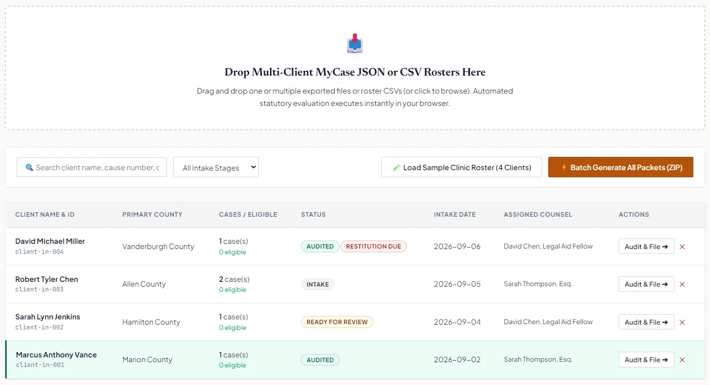

The Problem
Indiana's Second Chance Law (IC § 35-38-9) offers a path to expungement for thousands of residents with qualifying criminal records—but the process is catastrophically complex.
A single client can have offenses spanning multiple counties, multiple charge classes (A–D Misdemeanors, Level 1–6 Felonies, infractions), different waiting periods, and disqualifying conditions like unpaid restitution. Legal aid clinics—already understaffed—were drowning trying to evaluate even a dozen clients at a time manually.
Court-ready petitions must strictly conform to Indiana Trial Rule 10. A single formatting error can get a petition dismissed.
System Architecture
Roster Ingestion
Accepts multi-client JSON and CSV exports from MyCase (Indiana Odyssey). Parses charge class, disposition date, county, and restitution status in a single pass.
Parallel Eligibility Engine
Spawns a WebWorker per client. Each worker evaluates all 5 tiers of IC § 35-38-9 concurrently — including waiting period math, restitution traps, and multi-county cross-checks.
pdf-lib Pleading Compiler
Generates 10 compliant Trial Rule 10 court petitions per eligible client — completely in-memory, in the browser. Bundles all PDFs into a single ZIP archive with LSC grant metrics.
Implementation Detail: Eligibility Engine
The core of the system is a parallelized 5-tier evaluator. Each tier maps directly to a subsection of IC § 35-38-9, in order:
Key Features
Multi-Client Batch Roster Parsing
Ingests JSON and CSV exports from Indiana Odyssey (MyCase) to process entire clinic caseloads at once.
Parallel 5-Tier Statutory Audit
Evaluates all IC § 35-38-9 subsections concurrently per client using WebWorkers for zero UI blocking.
Trial Rule 10 Compliant PDF Generation
Compiles 10 court-ready petition PDFs per eligible client, built in-memory with pdf-lib. No server, no uploads.
LSC Grant Impact Metrics & ZIP Archive
Outputs a complete grant-reporting metrics bundle alongside a single ZIP archive of all generated petitions.
Unpaid Restitution Trap Detection
Explicitly flags clients with outstanding restitution — a disqualifying condition buried deep in the statute — before petitions are generated.
Fully Client-Side, Air-Gap Ready
Zero server requests. Sensitive client data never leaves the browser. Operable in restricted legal aid clinic environments.
See It In Action
The application is live and publicly accessible. No account or login required.